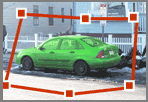
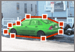

LabelMe is a research tool for labeling objects in images.
How can you help? Easy!
Help us build a large collection of annotated images.
Simply trace the outline of as many different objects from the image and for as many images as you are able. You can do this for all of the objects that you want or that you find interesting. You decide what is the right thing to do.
As soon as you label an image, your annotations will become immediately available for the scientific community to be used for object recognition research.
How do I trace the outline of an object?
Every time you enter the web page or press the 'Show New Image' button, a new image will be displayed for you to annotate. Your task is to trace the outline of some of the objects in the image. You may see that the image already contains some outlines. Those correspond to outlines done by other people.Here are two examples of traces following the outline of a car:
This one is bad.
This one is good since the trace tightly follows the outline of the object.
You can trace all of the objects that you want or that you find interesting. You decide what is the right thing to do.
In order to use the tool, there are only three basic operations you need to know: draw a polygon (left click), close a polygon (right click) and delete the current polygon (press 'delete' key). The operations are very intuitive and you will be used to them with little practice. Here is some advice on how to use the tool:
The outlines become immediately available for the research community, so try to correct the errors you make by deleting the object outlines that you feel are not good.
Modifying the outline
If you see an object outline that was already there when the image appeared and you think that you can do a better job, you can erase it and redo it. This will help to increase the quality of the annotations.
Entering a username
If you wish, you may enter a username by clicking on the "Change Username" link, which appears at the top of the page. A text box will appear, allowing you to enter a username of your choice. The username will then be associated with any new polygons that you create. This will allow you to search for annotations that you have done.
Storing the information
Thank you very much for your contribution.